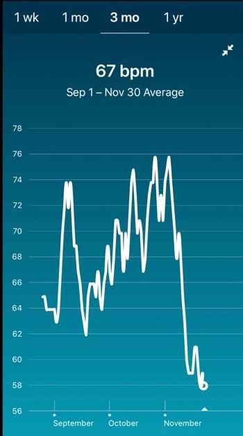

About This Project

This project was inspired by a Nationals fan exploring their own FitBit a week or two after the World Series, then noticing similar patterns on friends' FitBits.
This project was built with roughly 1GB of FitBit heart rate and sleep logs obtained in json and .csv format from 20 fan volunteers; there were over 500,000 data points collected. The data was cleaned and normalized using Python and Pandas in Jupyter notebooks; the visualizations were built using Bokeh.
The two game log style charts each feature only a subset of the fan data. The datasets for each were chosen on completeness. There are a variety of reasons for incomplete data such as a device with a dead battery or problems syncing the device with the user account.